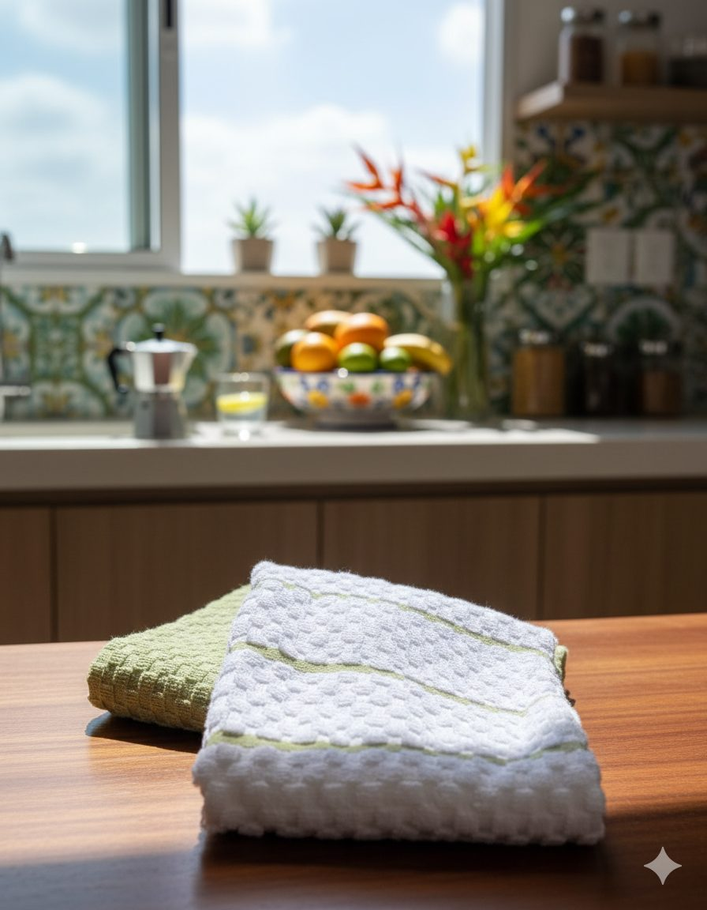

Na Tramatto, chamamos esse item de pano de louça — o mesmo pano de prato do dia a dia, só que com outro nome. Ao longo deste guia usamos os dois termos como sinônimos.
Por que o material é a decisão mais importante
Na maioria das categorias de produto, o design ou a marca são os diferenciadores principais. Em panos de prato, é o material. Um pano bonito de fibra curta vai encolher, perder absorção e começar a soltar fiapos após 20 lavagens. Um pano de aparência simples em algodão egípcio de fibra longa vai continuar melhorando — ficando mais macio e absorvendo melhor — depois de 100 lavagens.
O mercado tem três categorias principais de material: algodão (em diferentes qualidades), linho e microfibra sintética. Cada um tem vantagens reais — mas também limitações importantes que raramente aparecem na embalagem.
A maioria das pessoas avalia pano de prato pela primeira impressão: maciez ao toque na loja, padrão visual e preço. Nenhum desses critérios prevê durabilidade ou absorção real após 50 lavagens. O custo por uso ao longo de 2 anos é o indicador correto.
Algodão convencional — bom ponto de partida
O algodão convencional usa fibras de 15 a 25mm de comprimento, colhidas de variedades de algodão de fibra curta ou média. É o material mais comum em panos de prato vendidos em supermercados e lojas de varejo.
Vantagens:
- Preço acessível (R$ 15–40 por pano)
- Boa absorção inicial
- Fácil de encontrar
- Natural e biodegradável
Limitações:
- Fibras curtas quebram mais rápido sob atrito repetido da máquina
- Perde forma após 30 a 40 lavagens (encolhe, deforma nas bordas)
- Fiapos excessivos nas primeiras lavagens — e ao longo do uso
- Absorção diminui progressivamente com o uso
- Vida útil prática: 12 a 18 meses de uso diário intenso
Para uso ocasional ou como pano descartável de trabalho sujo, o algodão convencional faz sentido. Para quem busca qualidade de longo prazo, é onde o investimento em fibra longa se paga.
Algodão egípcio ELS — o padrão hoteleiro
O algodão egípcio de fibra extra-longa (ELS — Extra-Long Staple) usa fibras de 38mm ou mais — mais do que o dobro do comprimento da fibra curta convencional. Essa diferença de comprimento tem consequências diretas e mensuráveis:
Fibras mais longas criam um fio mais resistente porque cada fibra tem mais pontos de contato e entrelaçamento com as fibras ao redor. O resultado é um tecido que fica mais resistente com o uso, em vez de fragilizar. A cada lavagem, as fibras se compactam levemente, aumentando a densidade e a maciez — o oposto do que acontece com fibra curta.
Dados técnicos do algodão ELS:
- Absorção: até 27 vezes o peso em água (fibra curta: 20–22 vezes)
- Resistência ao rasgamento: 2× superior à fibra curta após 100 lavagens
- Vida útil com uso diário: 3 a 5 anos
- Melhora com o uso: maciez aumenta após as primeiras 10–15 lavagens
É o mesmo padrão de matéria-prima usado pelas grandes redes hoteleiras europeias para toalhas e roupas de cama — onde o critério de seleção é resistência a centenas de lavagens industriais sem perda de qualidade.
As tecelagens da Anatólia, na Turquia, têm mais de 500 anos de tradição no processamento de algodão egípcio. A combinação de matéria-prima de qualidade e técnica acumulada resulta em tecidos que nenhuma produção em larga escala consegue replicar.
Linho — o elegante com ressalvas
O linho (flax) é a fibra natural mais antiga do mundo em uso contínuo. Para cozinhas, tem características muito específicas que o tornam excelente em alguns contextos e inadequado em outros.
Onde o linho brilha:
- Secagem rápida — a estrutura da fibra de flax expele a umidade mais rapidamente que o algodão
- Aspecto visual sofisticado — a textura irregular natural do linho tem presença visual única
- Levemente antibacteriano — a própria fibra tem propriedades antimicrobianas naturais
- Fica mais macio com o uso (mas mais lentamente que o algodão ELS)
- Durabilidade estrutural alta — a fibra de linho é mais forte que o algodão
Onde o linho perde:
- Absorção menor — absorve significativamente menos água por grama do que o algodão egípcio. Para secar louça molhada rapidamente, o linho puro exige mais passadas
- Rigidez — fica mais rígido após lavagem sem amaciante (que não deve ser usado — o dilema é real)
- Preço superior ao algodão convencional, com menos absorção
- Enruga muito facilmente — requer engomamento para um aspecto impecável
O linho é ideal como complemento: usado para apresentação na mesa posta, como pano de cobertura ou para secagem de cristal e taças onde a maciez do algodão poderia deixar fiapos. Para o pano de uso diário na cozinha, o algodão ELS é mais funcional.

Microfibra — o mito do super tecido
A microfibra é um tecido sintético (normalmente poliéster + poliamida) com fios extremamente finos — menos de 1 decitex de espessura. Isso cria uma superfície com altíssima área de contato, o que resulta em absorção e poder de limpeza impressionantes no curto prazo.
O problema é o que acontece ao longo do tempo:
A degradação invisível da microfibra
- Perda de absorção gradual: a estrutura ultra-fina dos fios se rompe com o atrito da máquina. Após 50 a 80 lavagens, a microfibra começa a repelir água em vez de absorver — o oposto do que faz o algodão ELS
- Microplásticos: cada lavagem de microfibra libera entre 1.700 e 7.000 fibras de plástico que passam pelos filtros das máquinas de lavar e chegam aos rios e oceanos. Um pano de microfibra libera mais microplásticos em um ano de uso do que um pano de algodão libera fibras em toda sua vida útil
- Temperatura limitada: microfibra não pode ser lavada acima de 40–60°C (dependendo do fabricante) — o que limita a higienização profunda
- Incompatível com amaciante: o amaciante entope os microporos da fibra sintética de forma permanente e irreversível
- Acumula odor: o poliéster retém bactérias causadoras de odor de forma mais persistente do que o algodão natural
A microfibra funciona bem para limpeza a seco de superfícies (espelhos, telas, móveis), onde as vantagens de área de contato são máximas e as desvantagens de absorção de água são irrelevantes. Para uso em cozinha com louça molhada, não é a melhor escolha para quem pensa em qualidade de longo prazo.
Tabela comparativa
| Critério | Algodão ELS | Algodão convencional | Linho | Microfibra |
|---|---|---|---|---|
| Absorção inicial | ★★★★★ | ★★★★ | ★★★ | ★★★★★ |
| Absorção após 50 lavagens | ★★★★★ | ★★★ | ★★★ | ★★★ |
| Durabilidade | ★★★★★ (3–5 anos) | ★★★ (1–2 anos) | ★★★★ (2–4 anos) | ★★ (1–2 anos) |
| Maciez com o uso | Melhora | Mantém | Melhora (lentamente) | Piora |
| Temperatura de lavagem | Até 60°C | Até 60°C | Até 40°C | Até 40°C |
| Impacto ambiental | Natural, biodegradável | Natural, biodegradável | Natural, biodegradável | Libera microplásticos |
| Custo inicial (por pano) | R$ 80–150 | R$ 15–50 | R$ 60–120 | R$ 20–60 |
| Custo por ano de uso | R$ 24–30 | R$ 15–50 | R$ 20–45 | R$ 20–60 |
| Uso decorativo / mesa | Excelente | Funcional | Excelente | Inadequado |
Veredito: qual escolher
A resposta depende do uso principal:
Para uso diário em cozinha ativa — secar louça, limpar bancadas, uso intenso, lavagens frequentes — o algodão egípcio de fibra longa é a escolha superior. A absorção mantém-se alta com o uso, a durabilidade reduz o custo por uso ao longo dos anos e o material não libera microplásticos.
Para mesa posta e uso decorativo — panos sobre bancada, para cobertura de pão ou queijo, onde o visual tem peso igual à função — o linho é um excelente complemento. Não substitui o algodão no uso diário, mas adiciona presença visual que o algodão sozinho não entrega.
Para limpeza a seco de superfícies delicadas (vidros, espelhos, telas) — a microfibra tem vantagem real. Mas para panos de prato de cozinha molhada, não recomendamos como escolha principal.
Muitas cozinhas bem equipadas usam algodão ELS para o trabalho diário (secar louça, limpar) e linho para a apresentação (mesa posta, cobertura de pão, decor). Os dois materiais se complementam sem se substituir.
Perguntas frequentes
Algodão egípcio
da Anatólia.
Fibras de 38mm, tear jacquard artesanal, acabamento à mão. Os panos Tramatto usam o mesmo padrão de matéria-prima das grandes redes hoteleiras europeias — para cozinhas que valorizam o que dura.
Ver coleção completa